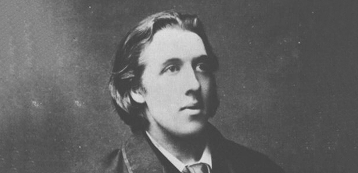

Oscar Wilde w anegdotach
Ksi¹¿ka Oscar Wilde o sztuce i ¿yciu jest prób¹ przybli¿enia refleksji Wilde’a o sztuce i ¿yciu, ukazania ich aktualnoœci, g³êbi, uniwersalnej wartoœci.
W pierwszej czêœci zosta³y wybrane i uporz¹dkowane tematycznie jego wypowiedzi na temat sztuki i ¿ycia (podano je w jêzyku angielskim i polskim t³umaczeniu). Czêœæ druga to omówienie problematyki zawartej w tych s¹dach. Appendix zawiera m.in. szczegó³owe kalendarium, informacje dotycz¹ce adaptacji utworów oraz opinie znanych postaci odnosz¹ce siê do Wilde’a b¹dŸ jego twórczoœci.
Kontakt i zamówienia: mywildbook@gmail.com

Wydawnictwo: WILDBOOK
Rok wydania: 2010
Oprawa: twarda
Format: 205 × 145
Liczba stron: 224
Cena: 42 z³
ISBN: 978-83-930701-0-7
O SZTUCE I ESTETYCE

Oscar Wilde (1881), fotograf nieznany, Ÿród³o: Wikimedia Commons (modyfikacja w³asna)
Twierdzi³, ¿e gdyby mia³ siê jeszcze raz urodziæ, to chce przyjœæ na œwiat w postaci kwiatu, nawet jeœli... „za pope³nione grzechy mia³by siê wcieliæ w czerwon¹ pelargoniê”.

W czasie pobytu w Ameryce oœwiadczy³: „Nie ma lepszej drogi, aby pokochaæ naturê, ni¿ przez sztukê”.
Kiedyœ zapytano go, jak spêdzi³ dzieñ. Odpowiedzia³: „Pracowa³em ca³y ranek nad korekt¹ jednego z moich poematów i usun¹³em przecinek. Po po³udniu wstawi³em go z powrotem”.
Twierdzi³, ¿e musi udoskonaliæ druk, nadaæ mu formy bardziej wykwintne. Z tego powodu w nastêpnej ksi¹¿ce, któr¹ wyda, zamierza pokazaæ próbê czegoœ interesuj¹cego w tej dziedzinie: litery bêd¹ mia³y nowy rysunek, przecinki kszta³t s³onecznika, a œredniki – granatu.
Pewnego dnia oznajmi³ Lily Langtry, ¿e jedzie do Australii. Kiedy zapyta³a, sk¹d taki pomys³, odpar³: „Kiedy patrzê na mapê, chcia³bym tam pojechaæ i przekonaæ siê, czy nie mo¿na jej nadaæ piêkniejszego kszta³tu”.
Wilde stara³ siê wszêdzie dostrzegaæ piêkno. Pewnego razu Robert Sherard (jego póŸniejszy biograf) rozgniót³ niedopa³ek cygara w kawie rozlanej na spodku i zapyta³, czy jest jakiekolwiek piêkno w tej papce. „Ale¿ tak – odpar³ Wilde – wytwarza siê ca³kiem efektowny br¹zowy kolor”.
Gdy zarzucano mu, ¿e korzysta z dorobku filozofów oraz innych pisarzy, przetwarzaj¹c ich przemyœlenia i podaj¹c jako w³asne, odpowiada³: „Przyw³aszczam sobie to, co ju¿ jest moje, bowiem z chwil¹, gdy rzecz jest opublikowana, staje siê w³asnoœci¹ publiczn¹”.
Po jednym z przedstawieñ, które obejrza³, napisa³ o pewnym mimie: „By³ po prostu wspania³y. I s¹dzê, ¿e to bardzo mi³o z jego strony, i¿ oznajmi³ nam, kogo naœladuje. Dziêki temu unika siê dyskusji”.
Edmund Gosse ¬– angielski poeta i krytyk – na entuzjastyczne s³owa Wilde’a, ¿e bardzo rad go poznaje, odrzek³: „Obawiam siê, ¿e dozna pan zawodu”. Na co us³ysza³ odpowiedŸ: „Nigdy nie doznajê zawodu, gdy poznajê literatów. Uwa¿am, ¿e s¹ to ludzie czaruj¹cy. Zawód sprawiaj¹ mi ich dzie³a”.
W jednym z odczytów Wilde krytykowa³ modê na kolory. Twierdzi³, ¿e jest ona równie g³upia, jak g³upia by³aby moda na tonacje w muzyce. „Uœmiechnêlibyœmy siê z politowaniem, gdyby nam oznajmiono, ¿e B-dur bêdzie przez kilka miesiêcy modn¹ tonacj¹!”
Nieustannie podkreœla³ znaczenie piêkna w otoczeniu. Twierdzi³ nawet, ¿e szko³a w ka¿dej miejscowoœci powinna byæ „tak piêknym gmachem, aby najwiêksz¹ kar¹ dla dzieci by³ zakaz przyjœcia nazajutrz do szko³y”.
W recenzji dotycz¹cej utworu With Sadi in the Garden Edwina Arnolda napisa³ o autorze: „Zna on Indie lepiej ni¿ ktokolwiek z ¿yj¹cych dziœ Anglików, jêzyk hinduski zaœ lepiej, ni¿ przystoi pisarzowi angielskiemu”. Nastêpnie zacytowa³ fragmenty, w których znalaz³a siê znaczna liczba s³ów hinduskich i zakoñczy³ swój wywód s³owami, ¿e ktoœ musi kiedyœ przet³umaczyæ sir Edwina Arnolda na… angielski.
Postulowa³, aby usun¹æ pewne tezy z ksi¹¿ki o literaturze w³oskiej, gdy¿: „zdradzaj¹ one niewiedzê, która z pewnoœci¹ jest wynikiem d³ugoletnich studiów”.
Wyj¹tkowe znaczenie mia³y dla niego luksusowe wydania ksi¹¿ek. Kiedyœ powiedzia³: „Jeœli pójdê do nieba, chcia³bym tam znaleŸæ pewn¹ liczbê ksi¹¿ek drukowanych na welinowym papierze i us³yszeæ, ¿e nale¿¹ do mnie”.
Coulson Kernahan po skoñczeniu korekty Portretu Doriana Graya otrzyma³ od Wilde’a z Pary¿a depeszê: „Okropny b³¹d w ksi¹¿ce. Wracam. Wstrzymajcie wydanie”. Gdy Wilde spotka³ siê z Kernahanem, zapyta³ zaniepokojony: „Czy nie przybywam za póŸno? Na mi³oœæ bosk¹, niech mi Pan powie, ¿e nie za póŸno!”. „Proszê siê uspokoiæ. Mamy czas” – odrzek³ Kernahan. Wilde z ulg¹ usiad³ w hotelu i otar³ spocone czo³o: „Dziêki Bogu! Nigdy nie darowa³bym ani sobie, ani Panu, gdyby moja ksi¹¿ka ukaza³a siê z takim b³êdem, to zbrodnia wobec sztuki”. I doda³ szeptem: „W utworze wystêpuje ramiarz, zwyk³y rzemieœlnik. Jakie mu nada³em nazwisko?”. „Ashton, zdaje siê. Tak. Ashton” – odrzek³ Kernahan. „Proszê nie powtarzaæ! Proszê nie powtarzaæ!” – rzek³ Wilde. „To wiêcej ni¿ mog¹ znieœæ moje rozstrojone nerwy... Ashton to nazwisko szlacheckie. Bo¿e odpuœæ mi! A ja nada³em je rzemieœlnikowi. Trzeba je zmieniæ na Hubbard. Tak, Hubbard po prostu pachnie rzemios³em”.
W 1894 roku ukaza³a siê powieœæ Roberta Hichensa The Green Carnation (Zielony goŸdzik). Przedstawia³a w sposób karykaturalny Alfreda Douglasa (jako lorda Reginalda Hastingsa) i Wilde’a (pan Esmé Amarinth). Podobieñstwo podkreœla³y te¿ zamieszczone tu nieco zniekszta³cone cytaty z Wilde’a, parodie fragmentów Dialogów o sztuce. Niektórzy uwa¿ali, ¿e autorem jest Wilde, dlatego wys³a³ do redaktora Pall Mall Gazette list, w którym stanowczo temu zaprzeczy³: „Przeciwstawiam siê stanowczo sugestii, która ukaza³a siê w Pañskiej gazecie w miniony czwartek i zosta³a powtórzona przez wiele innych czasopism, jakobym by³ autorem The Green Carnation. To ja wymyœli³em ten wspania³y kwiat. Ale z t¹ poœledni¹ i przeciêtn¹ ksi¹¿k¹, która zaw³aszczy³a sobie jego dziwnie piêkn¹ nazwê, nie mam nic wspólnego, o czym chyba nie muszê przekonywaæ. Kwiat jest dzie³em sztuki, ta ksi¹¿ka – nim nie jest”.
Wilde uwa¿a³, ¿e sztuka jest elitarna i jeœli sprawia przyjemnoœæ nielicznym, to dla twórcy jest sowitym wynagrodzeniem. Mawia³: „Wszystko mi jedno, co powiedz¹ t³umy, nie pragnê byæ popularnym powieœciopisarzem. To zbyt ³atwe”.
Niejednokrotnie pisa³, ¿e kiedy spo³eczeñstwo czy jakikolwiek rz¹d próbuje wp³ywaæ na sztukê, ona siê degraduje, zamiera, a artysta staje siê „nudnym lub œmiesznym hurtownikiem”. Twierdzi³: „Anglia zachowa³a wybitn¹ poezjê dziêki temu, ¿e publika nie by³a ni¹ zainteresowana, tote¿ nie mia³a na ni¹ wp³ywu”.
W lutym 1886 roku, w liœcie do redaktora Pall Mall Gazette tak skomentowa³ propozycjê dotycz¹c¹ sporz¹dzenia spisu tytu³ów stu najlepszych ksi¹¿ek: „Mówiæ ludziom, co maj¹ czytaæ, jest albo niepotrzebne, albo szkodliwe, bowiem ocena wartoœci literatury to kwestia wra¿liwoœci, a nie nauki. Ale mówiæ ludziom, czego maj¹ nie czytaæ, to coœ zupe³nie innego i polecam, aby sta³o siê misj¹ Komitetu ds. Rozwoju Programu Uniwersyteckiego. Taka misja jest bardzo potrzebna w naszej epoce – epoce, w której czyta siê tak du¿o, ¿e nie ma czasu siê zachwycaæ, a pisze tak du¿o, ¿e nie ma czasu myœleæ. Ktokolwiek spoœród chaosu naszych wspó³czesnych programów studiów wybierze sto najgorszych ksi¹¿ek i opublikuje ich listê wyœwiadczy m³odemu pokoleniu prawdziw¹ i trwa³¹ przys³ugê”.
Wilde wielokrotnie negowa³ krytykê sztuki z punktu widzenia moralnoœci. Twierdzi³: „Nie ma czegoœ takiego jak moralne czy niemoralne ksi¹¿ki. S¹ dobrze lub Ÿle napisane”. „Dobrzy ludzie, nale¿¹cy do typu normalnych i przeto nietuzinkowych, s¹ z artystycznego punktu widzenia nieciekawi. �li ludzie, z punktu widzenia sztuki, stanowi¹ fascynuj¹ce studium”.
Prasa okrzyknê³a, ¿e Portret Doriana Graya jest utworem niemoralnym. Odpowiadaj¹c na zajad³e ataki, Wilde tak skomentowa³ swój utwór: „Ksi¹¿ka zawiera straszliwy mora³ – mora³, którego zdeprawowani nie potrafi¹ dostrzec, ale który odnajd¹ wszyscy, których umys³y s¹ zdrowe. Czy to artystyczny b³¹d? Obawiam siê, ¿e tak. To jedyny b³¹d w tej ksi¹¿ce”.
Zarzut, ¿e Portret Doriana Graya jest powieœci¹ niemoraln¹ sformu³owa³ te¿ w 1895 roku podczas procesu Wilde’a adwokat Edward Carson. Wilde odpar³: „Chyba tylko w oczach barbarzyñców i analfabetów. Pogl¹dy filistrów na sztukê s¹ nieobliczalne w swojej g³upocie”.
Pewnego razu z³o¿y³ wizytê Robertowi Sherardowi. Czeka³ na gospodarza na dole, w salonie, którego wystrój uzna³ za ma³o gustowny. „Pozwól mi wejœæ na górê, Robercie” – zawo³a³ zrozpaczonym g³osem. „Jeœli pozostanê chwilê d³u¿ej w tym salonie, rozchorujê siê ciê¿ko”.
Frank Harris zaprosi³ Wilde’a i kilku znajomych na obiad w Café Royal. Raczy³ ich opowieœci¹, która by³a parafraz¹ noweli Anatola France’a. „Jaka¿ to œliczna historia, Frank” – rzek³ Wilde. Po chwili zaœ doda³: „Anatol France by³by j¹ ca³kiem zepsu³”.
W liœcie do poety i dziennikarza Williama Ernesta Henleya napisa³: „Im bogatsze dzie³o sztuki, tym ró¿norodniejsze prawdziwe interpretacje. Ubolewam nad ksi¹¿k¹, co do której krytycy s¹ zgodni. Musi to byæ bardzo oczywisty i p³ytki wytwór”.
W koñcu XIX wieku pisano wiele artyku³ów o tym, czy Hamlet by³ naprawdê ob³¹kany, czy tylko symulowa³ ob³êd. Czêsto te¿ na ten temat namiêtnie dyskutowano. W jednej z takich rozmów uczestniczy³ Wilde. Nagle oznajmi³, ¿e napisze o tym ksi¹¿kê i wie ju¿, jaki bêdzie jej tytu³. „Jaki?” – zapytano. OdpowiedŸ brzmia³a: „Czy komentatorzy Hamleta s¹ naprawdê ob³¹kani, czy tylko symuluj¹ ob³êd?”
Odnosz¹c siê do recenzji Portretu Doriana Graya w St. James’s Gazette, pisa³: „Jestem do cna znudzony reklamowaniem mnie. Nie podnieca mnie widok mojego nazwiska w gazetach. Napisa³em tê ksi¹¿kê wy³¹cznie dla w³asnej przyjemnoœci, a ogromn¹ przyjemnoœæ sprawi³o mi jej pisanie. Czy bêdzie siê cieszyæ popularnoœci¹ czy nie, jest mi absolutnie obojêtne”.
W czasopiœmie The Speaker zrecenzowa³ ksi¹¿kê o mêdrcu i mistyku chiñskim. Napisa³ miêdzy innymi, ¿e „Czuang Tsu to pisarz wielce niebezpieczny, a opublikowanie jego ksi¹¿ki po angielsku w dwa tysi¹ce lat po œmierci jest najwyraŸniej przedwczesne i mo¿e sprawiæ wiele przykroœci wielu osobom. Przyczyn¹ jest to, ¿e proponowany przez niego idea³ samokszta³cenia i w³asnego rozwoju wydaje siê dzisiaj wyj¹tkowo po¿¹dany, bowiem ludzie tak pilnie nauczaj¹ bliŸnich, ¿e nie pozostaje im ani trochê czasu, by sami siê kszta³cili”.
Wilde nie mia³ zbyt wysokiego zdania o wspó³czesnej mu literaturze. O jednym z romansów napisa³, ¿e „czyta siê go bez trudu i prawdopodobnie pisany by³ równie¿ bez trudu”. Po lekturze innych dzie³ z zakresu beletrystyki doszed³ do wniosku, ¿e „wiele przemawia za tym, aby czytaæ je od koñca. Ostatnia strona jest zazwyczaj najbardziej interesuj¹ca i, je¿eli zaczniemy od katastrofy czy te¿ denouement, czujemy siê z autorem jak równy z równym, co jest rzecz¹ bardzo przyjemn¹”.